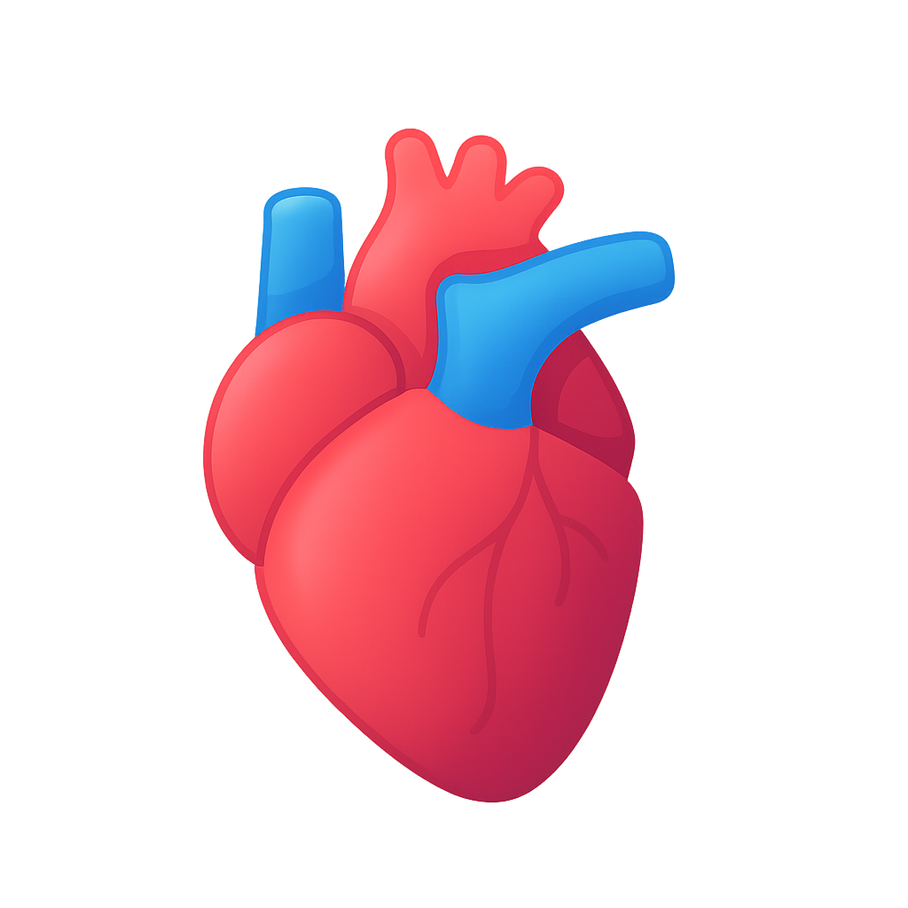
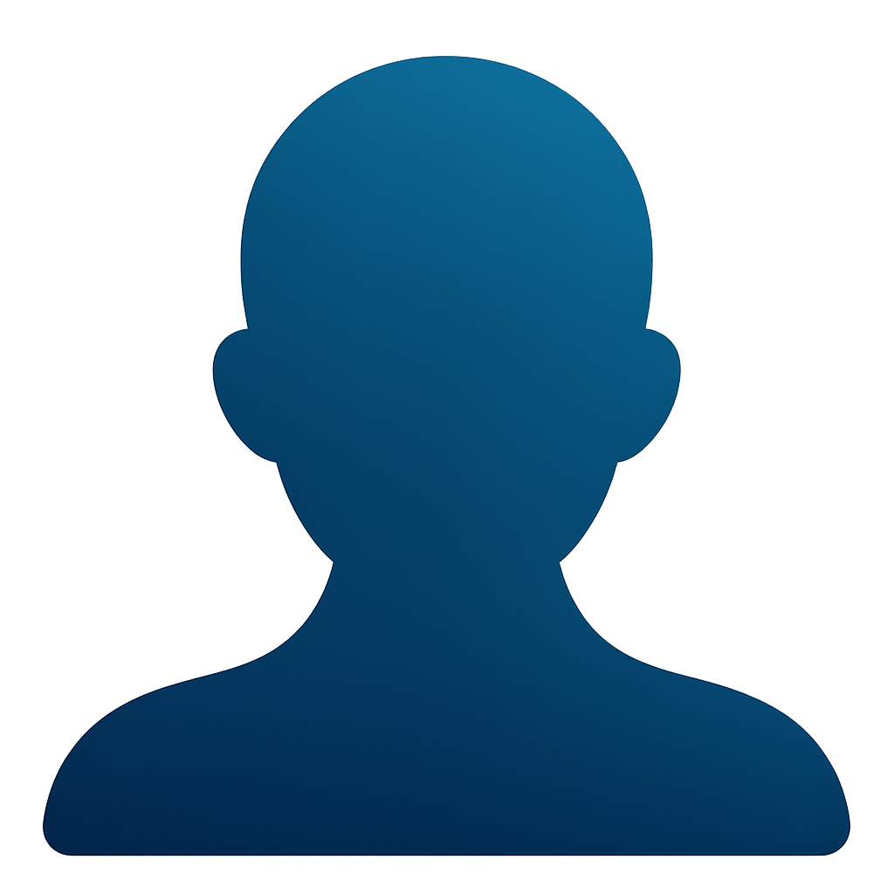
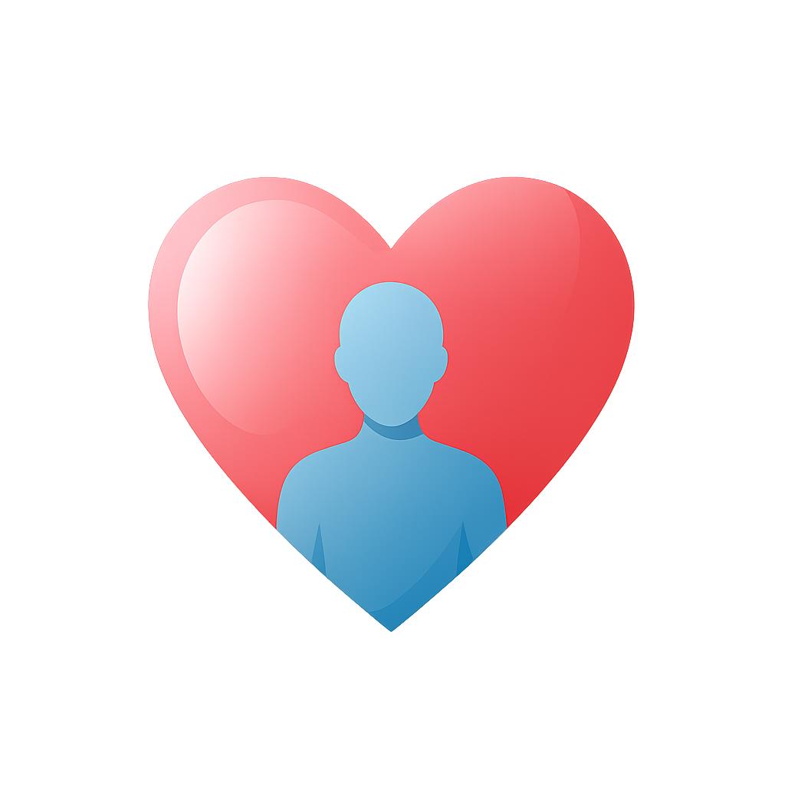
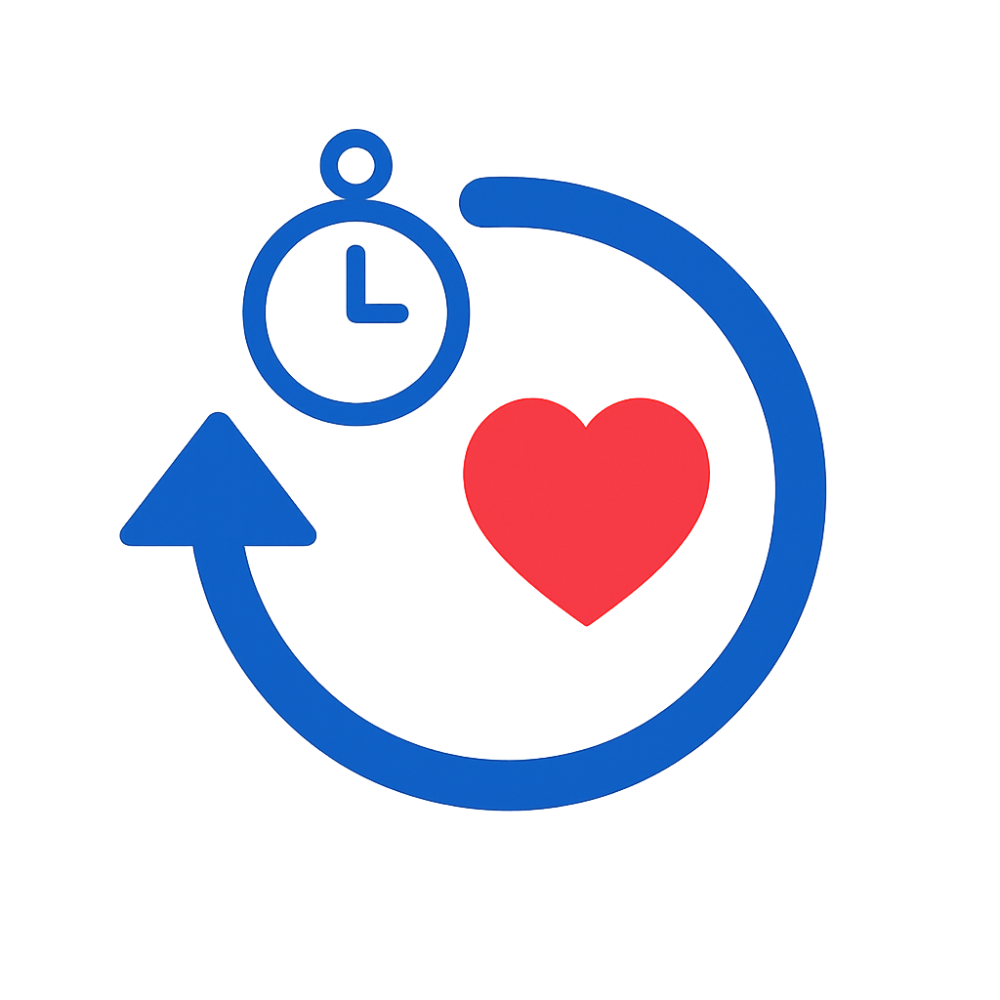

Para decidir con información y tranquilidad
¿Quién puede donar?
La mayoría de las personas pueden ser donantes, sin importar su edad o condición médica. Lo importante es expresar tu voluntad: cada caso se valora de forma individual por el equipo médico.
¿Qué se puede donar?
Se pueden donar órganos vitales como el corazón, los riñones, el hígado y los pulmones, así como tejidos como córneas, piel, hueso, válvulas cardíacas y tendones. Cada donación puede salvar o mejorar muchas vidas.
¿Cómo es el proceso?
La donación se realiza con rigor ético, confidencialidad y acompañamiento médico en todo momento. La familia recibe apoyo emocional y profesional durante el proceso.
¿Tienes una pregunta? VIDA te responde en segundos.
Mito vs Realidad
⏰
Mito
“Si soy donante, los médicos no harán todo lo posible por salvarme.”
✔️
Realidad
Ser donante no afecta la atención médica. Los equipos que salvan vidas y los que gestionan donaciones son independientes.
Testimonios de Esperanza
Historias reales que inspiran y transforman vidas¿Qué hace VIDA?
VIDA es un asistente conversacional diseñado para ofrecer orientación empática, clara y fiable sobre la donación de órganos y tejidos en España.
Funciona como una herramienta informativa que acompaña a las personas que tienen dudas, inquietudes o simplemente desean comprender mejor cómo funciona el proceso de donación, ya sea como posibles donantes o como familiares que enfrentan una decisión en un momento sensible.
VIDA no sustituye la atención médica ni la orientación profesional directa, pero está pensada para ayudarte a:
- Entender qué órganos y tejidos se pueden donar en vida o tras el fallecimiento.
- Saber cómo se gestiona la donación en España y cuál es el papel de la familia.
- Desmentir mitos comunes que pueden generar desconfianza o confusión.
- Reflexionar con libertad y sin presiones sobre la decisión de donar.
- Acceder a información oficial y actualizada, incluyendo enlaces seguros sobre voluntades anticipadas o cómo expresar tu deseo de donar.
VIDA es una voz que informa sin juzgar, acompaña con respeto y cree que donar es uno de los mayores actos de generosidad y humanidad.
Aviso de Privacidad – VIDA
VIDA (Voz de Información y Donación Asistida) es una herramienta informativa que opera sin recopilar datos personales sensibles. No se almacenan nombres, ubicaciones, correos electrónicos ni respuestas específicas de los usuarios. Las conversaciones no son monitorizadas ni utilizadas con fines comerciales, publicitarios ni de perfilado.
El uso de esta plataforma es completamente anónimo y su único propósito es ofrecer orientación general sobre el sistema de donación de órganos y tejidos en España, con base en información pública y normativa vigente, incluida la Ley 30/1979 y los lineamientos de la Organización Nacional de Trasplantes (ONT).
VIDA no sustituye asesoramiento médico, psicológico ni legal. Si necesita atención médica o desea formalizar su voluntad de donar (a favor o en contra), debe acudir a las instancias oficiales correspondientes, como los registros autonómicos de Instrucciones Previas o el sitio web oficial de la ONT.
Para cualquier comentario sobre esta herramienta, puede contactar con el equipo desarrollador a través del formulario de contacto disponible en esta página.
Encuesta anónima de satisfacción – VIDA
Responde en menos de 1 minuto:
¡Gracias!
Tu opinión nos importa y nos ayuda a mejorar VIDA.
Preguntas Frecuentes
Resuelve tus dudas más comunes sobre la donación de órganos y el funcionamiento de VIDA. Haz clic en cada pregunta para ver la respuesta.
¿Puedo registrar mi voluntad de donar aunque mis familiares no estén de acuerdo?
▶
¿Qué diferencia hay entre donación en vida y donación tras fallecimiento?
▶
¿Puedo cambiar de opinión si ya me registré como donante?
▶
¿La aplicación VIDA recoge datos personales?
▶
¿VIDA me registra como donante automáticamente?
▶
¿Qué puedo preguntarle a VIDA?
▶
Impacto de la Donación
Cada donante es una historia de esperanza. Estos números reflejan vidas transformadas y segundas oportunidades gracias a la generosidad.

Trasplantes realizados
6,464
Máximo histórico alcanzado
Líder mundial en trasplantes

Donantes fallecidos
2,562
Salvaron vidas tras fallecer
Generosidad que trasciende

Donantes vivos
404
Donaron riñón o hígado
Acto de amor y solidaridad

Donaciones / Trasplantes diarios
8 / 17
Cada día, 8 donaciones → 17 trasplantes
Ritmo sostenido de esperanza
 Donantes por millón
Donantes por millónde habitantes
52,6 pmp
La más alta del mundo
32 años consecutivos